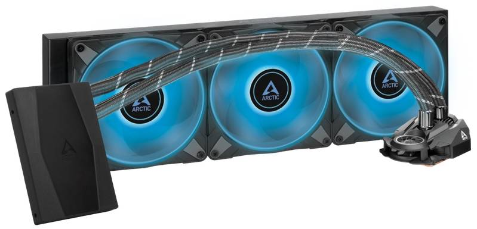
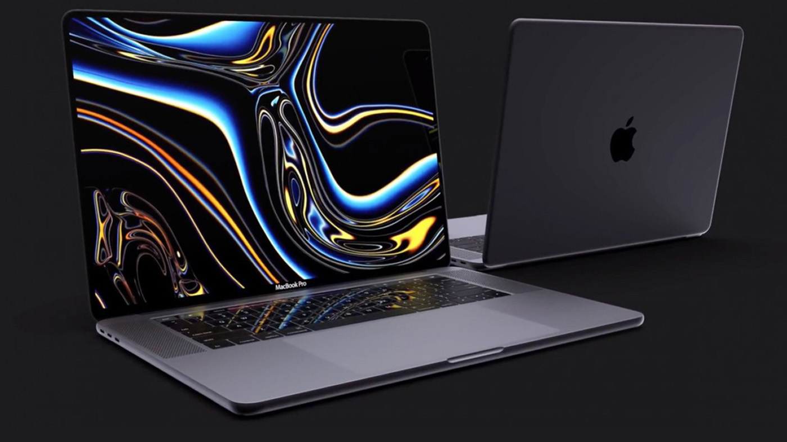

Процессор Ryzen Threadripper PRO 7995WX был выпущен компанией AMD, дата выпуска: 19 Oct 2023.
В момент выпуска процессор стоил $9999. Процессор разблокирован для оверклокинга. Общее количество ядер - 96, потоков - 192. Максимальная тактовая частота процессора - 5.1 GHz. Максимальная температура - 95°C. Технологический процесс - 5 nm. Размер кэша: L1 - 64 KB (per core), L2 - 1 MB (per core), L3 - 384 MB (shared). Поддерживаемый тип памяти: DDR5.
Характеристики AMD Ryzen Threadripper PRO 7995WX:
- Сокет: sWRX8
- Линейка процессоров: AMD Ryzen Threadripper
-Количество ядер: 64 шт.
-Техпроцесс: 7 нм
-Частота процессора: 2700 МГц
-Тип памяти: DDR4
-Вид поставки: BOX, OEM
-Ядро: Castle Peak
-Объем кэша L3: 256 МБ
-Тепловыделение: 280 Вт
-Назначение процессора: настольный ПК, игровой
-Производитель: AMD
Новая видеокарта от NVIDIA
NVIDIA очередной раз удивляет новыми сериями видеокарт и на этот раз речь идет о новой NVIDIA GeForce RTX 4090
20 сентября Nvidia представила видеокарты 40-й серии GeForce RTX 4080 и RTX 4090 на архитектуре Ada Lovelace. Видеоадаптер RTX 4090 с 24 ГБ видеопамяти поступит в продажу с 12 октября по рекомендованной цене в $1599.
Характеристики RTX 4090:
- CUDA-ядра: 16384
- Базовая тактовая частота: 2,23 ГГц
- Тактовая частота с ускорением: 2,52 ГГц
- Видеопамять: 24 ГБ GDDR6X
- Разрядность шины: 384-бит
- Размеры: 304х137 мм
- Энергопотребление: 450 Вт
Новая Система охлаждения от Arctic Cooling

Система охлаждения Arctic Cooling Liquid Freezer II-420 создана для того, чтобы процессор самой мощной игровой системы оставался прохладным даже при интенсивном разгоне. Функционирует она при этом практически бесшумно. В конструкции системы жидкостного охлаждения Arctic Cooling Liquid Freezer II-420 имеются алюминиевый радиатор, 3 вентилятора, медный водоблок и помпа с гибкими трубками. Скорость вращения вентилятора регулируется автоматически в пределах 1700 об/мин. Установить представленную систему охлаждения можно в разные компьютерные конфигурации с процессорами AMD и Intel.
Технические характеристики Arctic Cooling Liquid Freezer II-420:
- Размеры радиатора: 458 × 138 × 38 мм
- Материал радиатора: Алюминий
- Длина трубок: 450 мм
- Разъем помпы: 4-pin
- Скорость помпы: 2000 RPM±10%
-Количество и тип вентиляторов: 3 * 140 мм
- Габариты вентилятора: 140 × 140 × 25 мм
-Скорость вентилятора: 200 - 1700 RPM
-Воздушный поток вентилятора: 72.8 CFM (Max)
- Уровень шума вентилятора: 10-22.5 дБА
-Тип коннектора вентилятора: 4-pin PWM
- Габариты помпы: 98 × 78 × 53 мм
-Поддерживаемые платформы Intel: LGA 1200/115x/2011/2066
-Поддерживаемые платформы AMD: AM4
Продукция

Ноутбук Apple MacBook Pro 16
Мощный портативный компьютер Apple MacBook Pro, по праву входящий в топ лучших ноутбуков, оборудован высококачественным дисплеем с контрастностью 1 000 000:1 и пик
-Оснащение: три порта Thunderbolt 4 (USB-C), Wi-Fi 6, Bluetooth 5.0, камера FaceTime HD;
-Цена: от 174 000 рублей.
Монитор Samsung Odyssey OLED G8 S34BG850SI:
это широкоэкранный изогнутый монитор с OLED-экраном, диагональю в 34 дюйма, разрешением 3440×1440 и частотой обновления 175 герц. Он подходит для киберспортивных игр, так как поддерживает AMD FreeS
Характеристики:
-Диагональ: 31"-40"
-Макс. разрешение: 3440x1440
-Тип матрицы экрана: OLED
-Яркость: 250 кд/м2
-Макс. частота обновления кадров: 145-240 Гц
-Интерфейсы видео: вход mini DisplayPort, вход micro HDMI, USB Type-C, вход DisplayPort
-Соотношение сторон: 21:9
-Особенности: подсветка без мерцания (Flicker-Free), встроенные колонки, регулировка по высоте
-Изогнутый экран: Да
-Время отклика: 0.03 мс
-Цвет: серебристый
-Производитель: Samsung
Предстоящие события
Розогрыш карты с номиналом в 100000руб в честь 100000 покупки на нашем сайте, участвуют все покупатели зарегестрируемые на нашем сайте.
О нас
Наша цель изменить жизнь людей, сделав простым доступ к огромному количеству качественных и недорогих товаров, предоставляя лучший сервис.